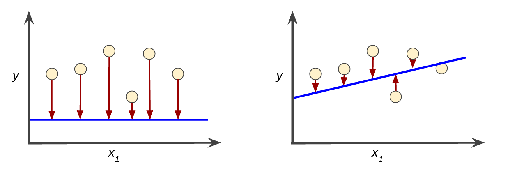

<h1> <a href="https://developers.google.com/machine-learning/crash-course/descending-into-ml/training-and-loss" target="_blank">
  Questions - 4 - 说明 </a></h1>

<div class="row">

  <div class="col-md-6">
    <strong>Figure. High loss in the left model; low loss in the right model. </strong>
    

  </div>
  <div class="col-md-6">


    $$ MSE = \frac{1}{N} \sum_{x,y \in D} (y - prediction(x))^2 $$
  </div>

</div>


<div>
  <strong></br>以下计算是针对上一页图：</strong> $$ MSE_{left} = \frac{0^2+0^2+0^2+2^2+0^2+0^2+0^2+2^2+ 0^2+0^2}{10} = 0.8 $$ $$ MSE_{right} = \frac{0^2+1^2+0^2+1^2+0^2+1^2+0^2+1^2+ 0^2+0^2}{10} = 0.4 $$

</div>
